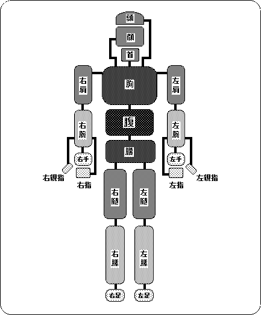
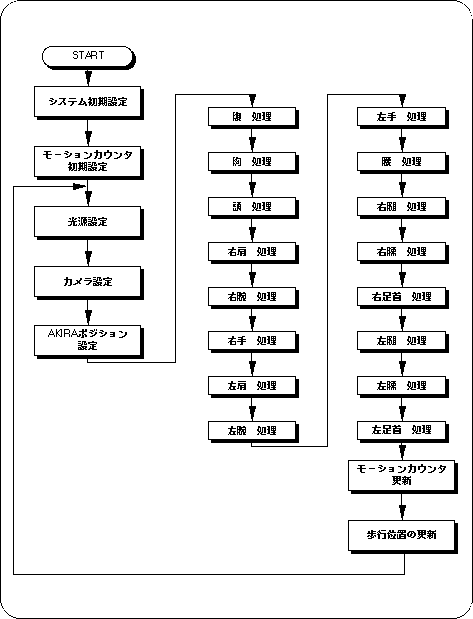
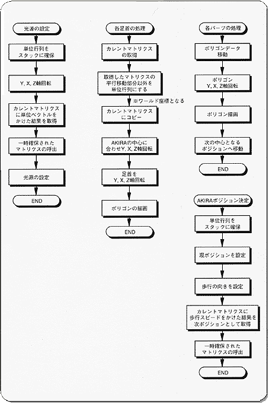

★SGL User's Manual
★PROGRAMMER'S TUTORIAL
★SGL User's Manual
★PROGRAMMER'S TUTORIAL
▲戻る｜進む▼
PROGRAMMER'S TUTORIAL
デモプログラムＣ
Walking Akira
- ここで、人体のモデルが歩くアニメーションをするデモプログラム（demo_C）を紹介します。モデルはバーチャファイターのアキラです。
アキラは22のポリゴン・オブジェクトで構成されていて、それぞれのオブジェクトは下図のような階層構造になっています。
図C-1 アキラの親子構造

注）アキラは今あなたの方を向いています。
- アキラの各親子オブジェクト間に角度データを持たせることによって、“関節”を作ることが出来ます。この角度データを変化させると、関節でつながれたアキラを動かすことが出来ます。
この各親子オブジェクト間の角度データを“モーションデータ”と呼びます。
- 人体のような複雑なモーションデータは、通常３Ｄアニメーションツール等によって作成します。
フローC-1 メインの流れ図

フローC-2 主な処理の詳細流れ図

▲戻る｜進む▼
★SGL User's Manual
★PROGRAMMER'S TUTORIAL
Copyright SEGA ENTERPRISES, LTD., 1997